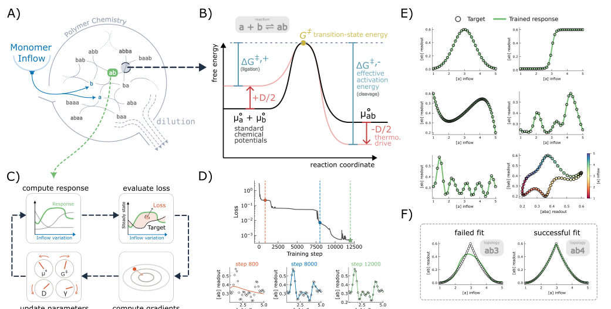

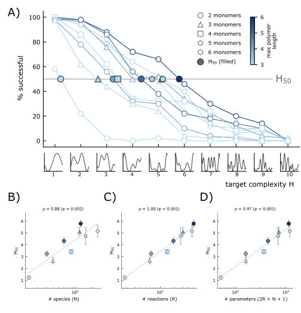
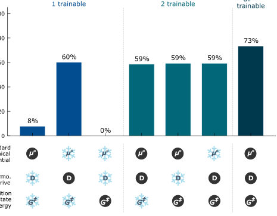
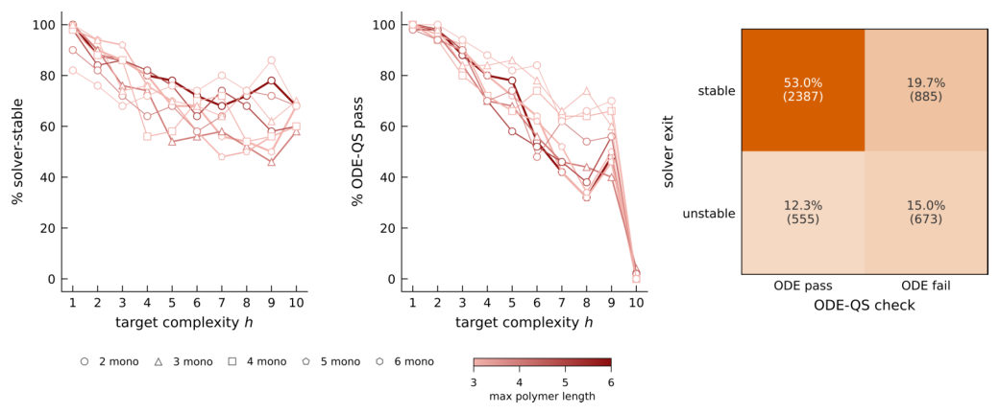
← Index · ← Previous · Next →
Authors: So Chigusa
Type: theory · Category: quantum information and computing · PDF: https://arxiv.org/pdf/2609.16119v1
Analysis basis: full PDF text, analyzed in chunks
Topic relevance: 🔥 quantum measurements 4/5
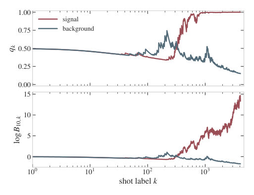
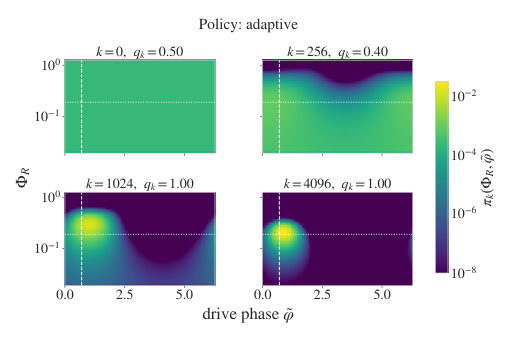
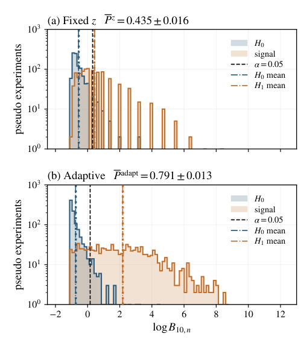
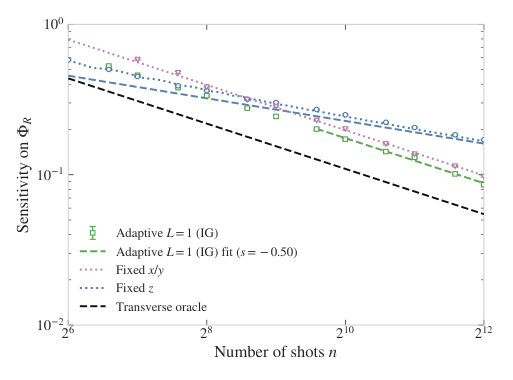
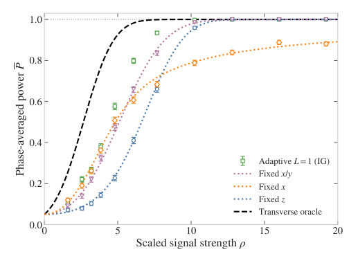
Summary. This paper develops an optimal, adaptive strategy for detecting weak coherent drives in quantum sensors by treating the problem as a composite hypothesis test. By comparing adaptive Bayesian readouts against fixed measurement sequences, the authors prove that exploiting information about unknown signal parameters significantly boosts detection sensitivity. This has direct implications for improving the precision of quantum measurements in quantum optics and sensing applications.
Why it may be interesting. This work provides rigorous theoretical bounds and optimal strategies for quantum sensing in the presence of unknown noise parameters, which is crucial for designing practical quantum measurement protocols.
Main problem. The paper addresses the optimal strategy for detecting weak coherent drives (Rabi signals) when the signal parameters (amplitude, phase, detuning) are unknown, framing it as an asymmetric composite hypothesis test.
Main result. An adaptive Bayesian policy significantly outperforms fixed readout schedules, achieving a sensitivity consistent with the optimal $n^{-1/2}$ scaling for large shot counts, demonstrating the value of exploiting nuisance parameter information.
Method. The analysis employs weak signal expansion techniques and Monte Carlo pseudoexperiments to compare detection power, sensitivity, and Type-II error exponents across different measurement strategies.
Model / system. The system is a two-level sensor (qubit) interrogated by a weak classical field near resonance, modeled using an effective Hamiltonian and subjected to relaxation and readout errors.
Key observables. Log Bayes factor, detection power, sensitivity scaling ($n^{-1/4}$ vs $n^{-1/2}$), and the effective Type-II error exponent.
Important parameters / regimes. Signal parameters $\lambda = (\Omega, \Delta, ilde{\varphi})$, fixed shot budget $n$, and the control of the Type-I error rate ($\alpha$).
Assumptions / limitations. The analysis assumes a fixed interrogation time $T$ and utilizes approximations like the leading Magnus term in the evolution operator.
Figures summary. Figures compare the evolution of a diagnostic quantity ($f_{ ext{pol}}$) for different Rabi amplitudes, showing the adaptive policy's superior performance compared to fixed readout axes, and illustrate the tracking of drifting signal directions in detuned regimes.
Paper structure. The paper progresses from formulating the problem as a composite hypothesis test, detailing the comparison between non-adaptive and myopic Bayesian policies, providing analytical scaling results, and validating these findings through extensive Monte Carlo simulations.
Motivated by searches for weak coherent drives, we formulate repeated quantum sensing with a fixed shot budget as an asymmetric composite hypothesis test. Taking Rabi sensing as a concrete example, we benchmark detection power, sensitivity, and Type-II error exponents in the resonant case with unknown signal amplitude and phase. We compare non-adaptive population and transverse readouts with a myopic Bayesian policy that selects each projective axis by maximizing the expected information gain in one step. The common decision statistic is a log Bayes factor, with a policy specific threshold calibrated under the null to enforce a common Type-I error. A weak signal expansion shows that population readout is phase independent but quadratic in amplitude, giving $n^{-1/4}$ sensitivity, whereas transverse readout is linear in amplitude and permits $n^{-1/2}$ sensitivity without adaptation, but is phase-dependent. In Monte Carlo pseudoexperiments, the adaptive policy exploits posterior information about the unknown direction to guide subsequent readouts; its sensitivity is consistent with $n^{-1/2}$ over the simulated large $n$ range and, at the largest simulated shot counts, outperforms the fixed transverse schedules. Its phase-averaged effective Type-II exponent also exceeds the non-adaptive references over the simulated range. These results demonstrate the finite budget value of exploiting nuisance parameter information under calibrated false positive control.
Authors: Pascal Stadler, Alec Owens, Etienne Granet, David Muñoz Ramo, Michael Marthaler
Type: both · Category: other · PDF: https://arxiv.org/pdf/2609.17102v1
Analysis basis: full PDF text, analyzed in chunks
Topic relevance: 🔥 QC/QI experiment 4/5
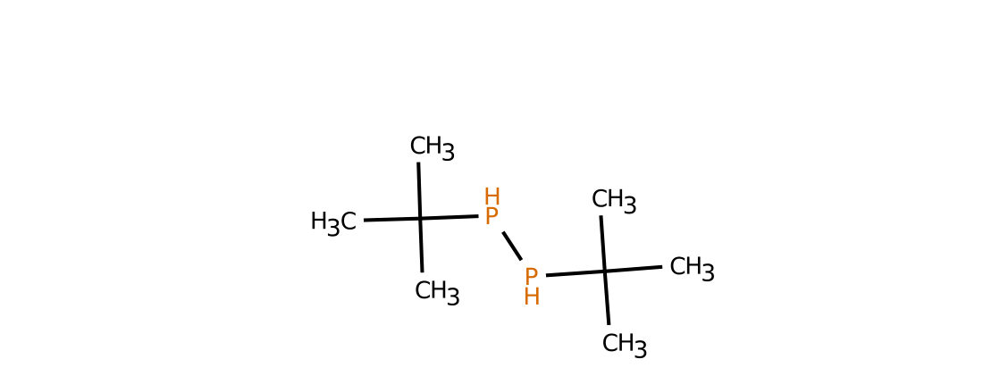
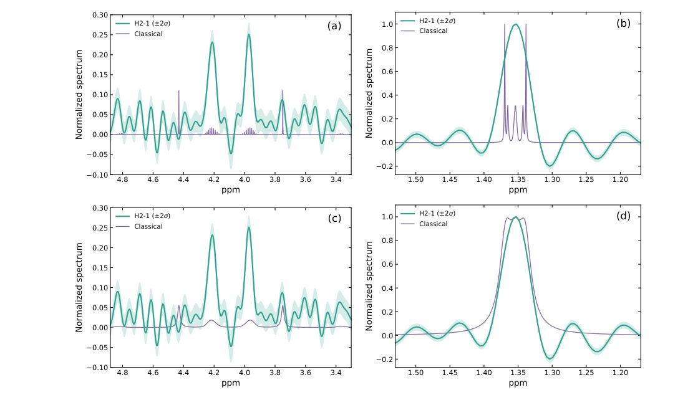
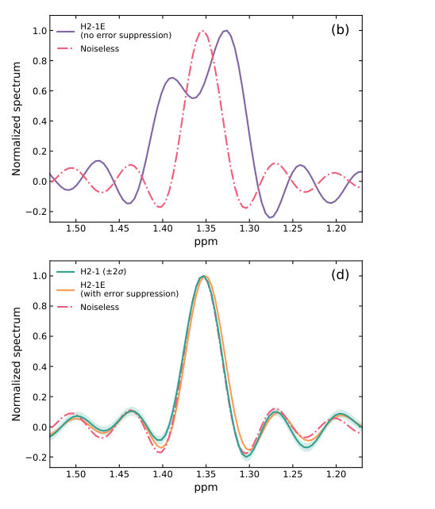
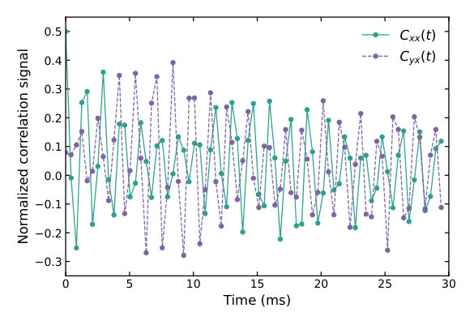
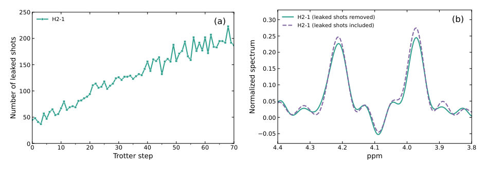
Summary. This paper presents a large-scale, end-to-end quantum simulation of NMR spectra using a trapped-ion quantum computer. By employing significant Hamiltonian reduction and advanced error suppression, the authors successfully simulated a complex molecule, achieving spectral fidelity matching classical results. This work advances the practical utility of quantum computation for chemical analysis.
Why it may be interesting. This work directly bridges quantum computation with molecular physics by applying quantum simulation techniques to a chemically relevant problem (NMR), showcasing the feasibility of quantum computation for complex, many-body quantum systems.
Main problem. The paper addresses the challenge of simulating complex Nuclear Magnetic Resonance (NMR) spectra, which is a key application for quantum simulation, on near-term quantum hardware.
Main result. The authors successfully demonstrated an end-to-end, large-scale digital NMR simulation of a complex molecule, reproducing key spectral features that previous quantum hardware demonstrations could not achieve.
Method. The simulation employs Trotterized real-time quantum evolution on a trapped-ion quantum computer, utilizing a hardware-efficient reduction of the full spin Hamiltonian to manage circuit depth.
Model / system. The system is the 1,2-di-tert-butyl-diphosphane molecule, modeled as a 22-spin system. The simulation is performed on a trapped-ion quantum computer (Quantinuum H2), requiring significant Hamiltonian reduction to fit the available qubits and gate depth.
Key observables. The reconstructed liquid-state proton NMR spectrum, time-domain correlation functions ($C_{xx}(t), C_{yx}(t)$), and spectral fidelity compared to classical reference calculations.
Important parameters / regimes. The simulation involves an effective 21-spin model, uses Trotter steps up to 70 (or more in early stages), and is constrained by hardware gate depth and noise characteristics.
Assumptions / limitations. The primary approximation involves projecting the full Hamiltonian onto a 21-dimensional subspace by rewriting the phosphorus subsystem in the singlet-triplet basis. Error suppression techniques are also crucial assumptions for fidelity.
Figures summary. Figures compare the simulated H2-1 hardware spectrum against classical reference spectra, showing agreement in key features like double-peak structures, and illustrate the impact of leakage and finite-shot noise.
Paper structure. The paper details the physical problem (NMR simulation), outlines the necessary Hamiltonian reduction (from 22 spins to 21 effective spins), describes the quantum simulation workflow (Trotterization, error mitigation), and concludes by validating the results against classical benchmarks on the trapped-ion hardware.
Simulating nuclear magnetic resonance (NMR) spectra is a promising application of quantum simulation. Using Quantinuum's System Model H2, a trapped-ion quantum computer, we demonstrate an end-to-end, large-scale digital NMR simulation of a classically challenging benchmark molecule, 1,2-di-tert-butyl-diphosphane. We implement a hardware-efficient reduction of the nuclear-spin Hamiltonian, enabling Trotterized real-time evolution of an effective 21-spin model with tailored error suppression to reduce the effects of device noise. The reconstructed liquid-state proton NMR spectrum agrees with classical reference calculations and reproduces key spectroscopic features that previous quantum hardware demonstrations did not capture. Given the widespread use of NMR in chemical analysis and industrial research, these results advance digital quantum simulation of NMR spectra towards practical quantum utility.
Authors: Liangwei Zeng, Boris A. Malomed, Yaroslav V. Kartashov, Xing Zhu
Type: theory · Category: quantum gases · PDF: https://arxiv.org/pdf/2609.17092v1
Analysis basis: abstract only; PDF text extraction failed or PDF unavailable
Topic relevance: 🔥 analog quantum simulation 4/5
Summary. This paper theoretically investigates stable three-dimensional lattice solitons in a Bose-Einstein condensate modified by spin-orbit coupling and confined in an optical lattice. The research finds that the SOC-lattice interaction stabilizes unique full-vortex and semi-vortex states, which are robust against collapse. These findings pave the way for experimentally realizing complex, vorticity-carrying quantum matter structures.
Why it may be interesting. This work directly addresses the complex interplay between external potentials (OL), internal interactions (self-interaction), and spin-orbit coupling in BECs, leading to novel, stable topological structures (vortices) that are highly relevant for controlling quantum matter.
Main problem. The study investigates the existence and stability of three-dimensional (3D) lattice solitons in a binary self-interacting Bose-Einstein condensate (BEC) subjected to spin-orbit coupling (SOC).
Main result. The interplay between SOC and the optical lattice (OL) stabilizes full-vortex (FV) and semi-vortex (SV) solitons, which are stable even in the presence of supercritical collapse possibilities.
Method. Theoretical analysis was performed to model the soliton formation and stability within the specified quantum gas system.
Model / system. The system is a binary self-interacting Bose-Einstein condensate (BEC) confined in a 3D optical lattice (OL) and incorporating spin-orbit coupling (SOC).
Key observables. Stability regions of the 3D full-vortex solitons and semi-vortices, and the formation of density peaks and vortical phases.
Important parameters / regimes. SOC strength and OL depth, which are shown to expand the stability regions.
Assumptions / limitations. The analysis is based on the BEC being held in a 3D optical lattice and considering the effects of SOC.
Paper structure. The paper analyzes the formation and stability of 3D solitons, contrasting their existence in uniform vs. lattice potentials, and examining the stability regions for different interaction types (self-attractive vs. self-repulsive).
We address three-dimensional (3D) solitons maintained by spin-orbit coupling (SOC) in the binary self-interacting Bose-Einstein condensate (BEC) held in the 3D optical lattice (OL). The analysis reveals that the SOC-OL interplay results in the formation of stable full-vortex (FV) soli-tons, built as sets of four density peaks residing in neighboring wells of the lattice potential, with the superimposed global vortical phase, and site-centered semi-vortices (SV), in which the vorticity is present in only one component. The full-vortex solitons, with their specific phase textures, do not exist in a uniform BEC with SOC. Full-vortex and semi-vortex states in the binary self-attractive BEC are stable despite the possibility of the supercritical collapse in the 3D system. Such states also exist, as gap solitons, in the self-repulsive 3D system. In terms of the chemical potential and number of particles, the stability regions of the 3D full-vortex solitons and semi-vortices expand with the increase of the SOC strength and OL depth. The results open the route to the creation of 3D complexes of vorticity-carrying condensates that can be realized with existing experimental techniques.
Authors: Abhishek Chowdhury
Type: theory · Category: statistical mechanics · PDF: https://arxiv.org/pdf/2609.16355v1
Analysis basis: full PDF text, analyzed in chunks
Topic relevance: Keldysh / 2PI / non-Gaussian methods 3/5 · correlated / nonlocal dissipation 3/5 · driven-dissipative phase transition 3/5 · methods for driven-dissipative 3/5 · non-equilibrium universality 3/5 · quantum measurements 2/5 · Full counting statistics 1/5 · analog quantum simulation 1/5 · scars & prethermalization 1/5
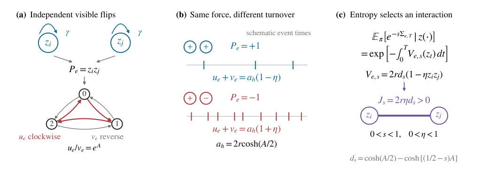
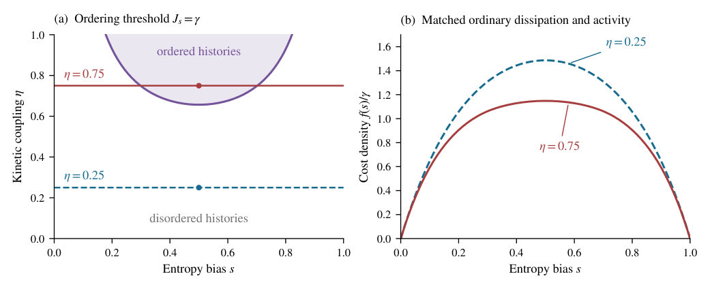
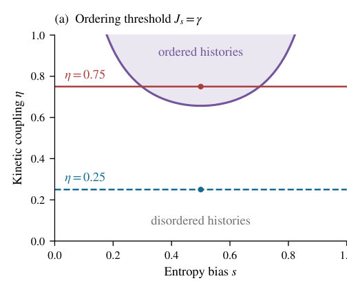
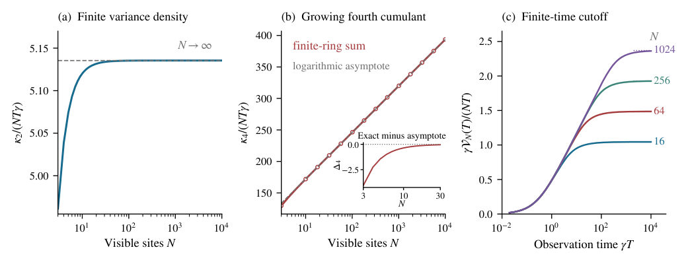
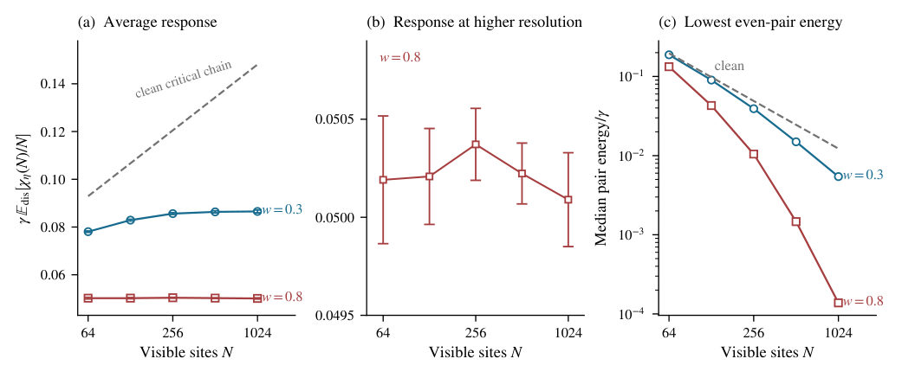
Summary. This theoretical work shows that the collective phases of rare events in complex systems are not determined by simple average thermodynamic quantities. Instead, they are dictated by hidden kinetic correlations that become visible when the history is weighted by its full entropy production. The study provides advanced mathematical tools to quantify this 'kinetic information' missed by standard equilibrium diagnostics.
Why it may be interesting. The focus on entropy-conditioned histories and the detection of hidden correlations provides a powerful, non-equilibrium tool for understanding how microscopic details dictate macroscopic phase selection, relevant to open quantum systems.
Main problem. The paper investigates whether the collective phases of rare histories in a driven system are determined solely by aggregate thermodynamic measurements or if they depend on hidden kinetic correlations.
Main result. Visible dynamics and mean dissipation are insufficient to determine the collective phases of rare histories; hidden kinetic correlations are crucial, as demonstrated by the entropy weighting.
Method. The analysis uses path-space variational principles, entropy weighting ($\mathcal{P}[\dots] \propto \exp[-\int V_{e,s} dt]$), and spectral analysis of the tilted generator to study conditioned dynamics.
Model / system. The model involves visible variables (spins $z_i$) coupled to hidden degrees of freedom (e.g., $\mathbb{Z}_3$ cycles on edges). The dynamics are analyzed via Markov processes conditioned on the full entropy production.
Key observables. Entropy production, entropy variances, joint cumulants of entropy and hidden activity, and the fourth cumulant rate per site.
Important parameters / regimes. Entropy bias ($s$), system size, and observation time.
Assumptions / limitations. The analysis relies on comparing microscopic models under fixed ordinary visible processes and assuming the mathematical tractability of the entropy weighting.
Figures summary. Figure 1 illustrates the coupling mechanism between visible flips and hidden cycles, showing how entropy weighting leads to an effective interaction.
Paper structure. The paper progresses by establishing the insufficiency of aggregate diagnostics, analyzing specific models (like conserved particles or Ising critical points) to show phase selection, and concluding by identifying the role of kinetic information missed by thermodynamics.
Visible dynamics and mean dissipation need not determine the collective phases of rare histories. We construct local Markov models with identical ordinary visible path distributions, stationary states, mean entropy production, mean jump activity and driving affinities, yet different phases when histories are weighted by their full entropy production. Visible configurations modulate hidden driven cycles, whose exact elimination turns kinetic correlations into interactions. A positive spectral reduction separates hidden relaxation from collective modes. Periodic binary models retain opposite phases with entropy variances matched at every observation time. For conserved particles, a pair matches the first two joint cumulants of entropy and hidden activity at every observation time, yet selects segregation or a fluctuating state with suppressed long-wavelength density noise. Bound-state transport and fermionic evolution determine their contrasting dynamics. At a clean Ising critical midpoint, the entropy source couples quadratically to the thermal perturbation, making the fourth cumulant the first to detect the critical susceptibility. Its rate per site grows logarithmically, with an exact cutoff set by system size and observation time. For two quenched disorder ensembles, exact sample-response formulas and numerical evidence support a finite fourth-cumulant density despite very slow relaxation; a weak-disorder continuum response admits a controlled Borel sum. A common positive hidden eigenvector characterizes autonomous selected dynamics. When this condition fails, a finite network develops visible memory while preserving its ordinary visible process and mean diagnostics. These results identify kinetic information missed by aggregate thermodynamic observations.
Authors: Riccardo Cipolloni, Leticia F. Cugliandolo
Type: theory · Category: disordered systems and neural networks · PDF: https://arxiv.org/pdf/2609.17522v1
Analysis basis: full PDF text, analyzed in chunks
Topic relevance: Keldysh / 2PI / non-Gaussian methods 3/5 · methods for driven-dissipative 3/5 · non-equilibrium universality 3/5 · scars & prethermalization 3/5 · analog quantum simulation 2/5 · correlated / nonlocal dissipation 2/5 · driven-dissipative phase transition 2/5 · quantum measurements 1/5
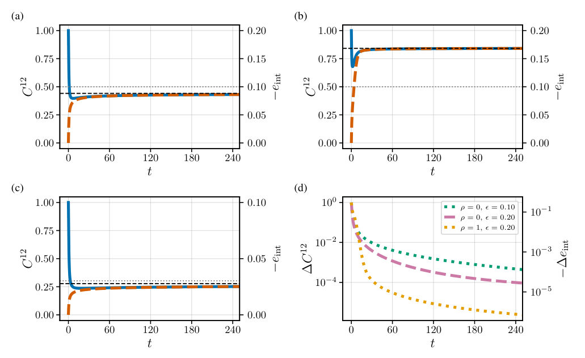
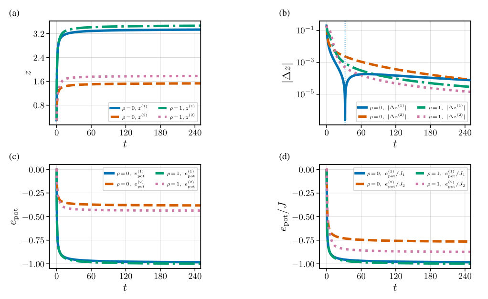
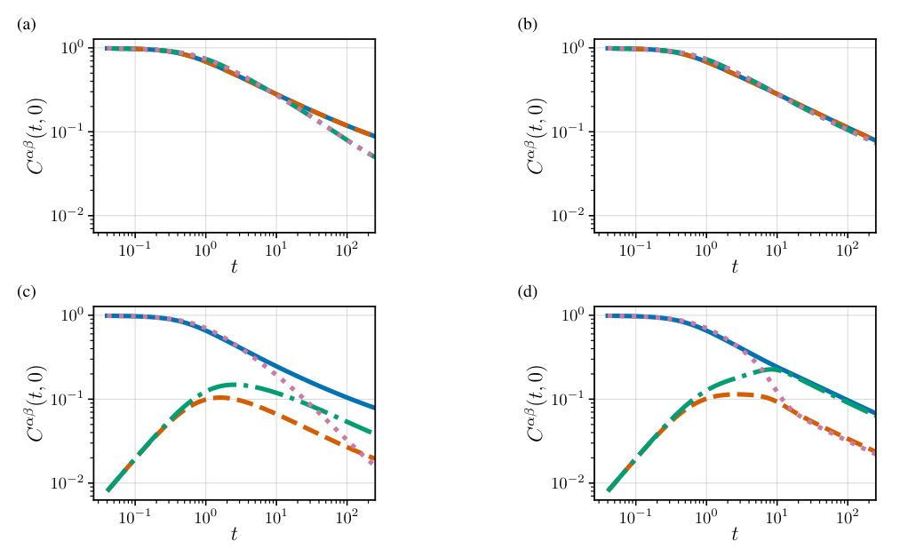
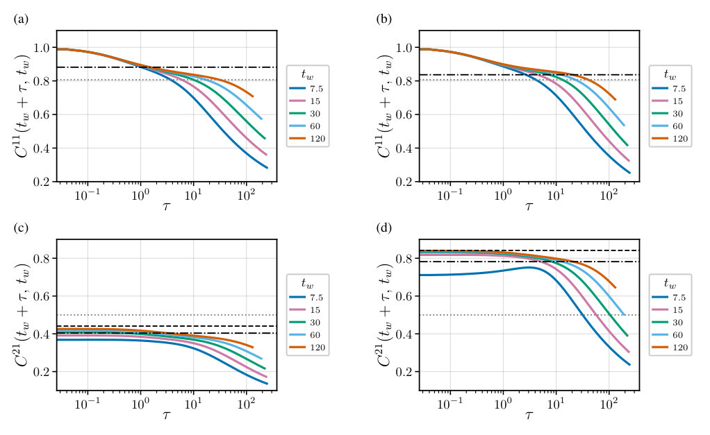
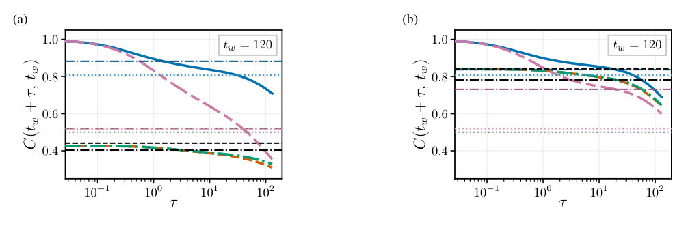
Summary. This paper analyzes the joint dynamics of coupled spherical p-spin spin glass models to understand how coupling affects glassy aging. Using advanced theoretical tools like replica symmetry breaking and two-time correlation functions, the authors show that strong coupling can enforce a common effective temperature across subsystems, while weak coupling allows each system to retain its own distinct aging dynamics.
Why it may be interesting. The study of coupled glassy dynamics and aging phenomena provides theoretical tools (like generalized effective temperatures and multi-subsystem equations) that are highly relevant to understanding non-equilibrium dynamics in complex quantum many-body systems, such as those found in quantum computation or quantum simulation.
Main problem. The paper investigates how multiple coupled glassy systems, modeled by spherical p-spin systems, evolve jointly, specifically focusing on whether they develop a common aging structure or remain dynamically distinct.
Main result. For strong coupling, the system can exhibit a common effective temperature derived from fluctuation-dissipation estimates, which is higher than the individual subsystem temperatures. In contrast, weak coupling suggests the development of separate aging regimes for each system.
Method. The authors derive closed multi-subsystem two-time equations and employ both a marginal one-step replica-symmetry-breaking (1RSB) construction for static benchmarks and dynamical analysis using the Martin-Siggia-Rose-Janssen-DeDominicis action.
Model / system. The system consists of coupled spherical p-spin models, where the total Hamiltonian includes both internal glassy potentials and an interaction term $H_{ ext{int}}$ coupling the subsystems. The dynamics are analyzed in the over-damped limit.
Key observables. Two-time correlations and responses, effective temperature ($T_{ ext{eff}}$), overlap plateaux, and aging crossover scales.
Important parameters / regimes. Coupling strength ($\epsilon$), disorder correlation ($ ho$), and the number of coupled systems ($S$).
Assumptions / limitations. The analysis is performed in the over-damped limit, and the comparison between finite-time dynamics and the theoretical 1RSB predictions is a key focus, with limitations noted regarding the determination of sharp transitions.
Paper structure. The paper proceeds by deriving the general dynamical equations, formulating the static replica problem using 1RSB, specializing the analysis to two coupled $p=3$ systems, and finally discussing the distinct behavior observed in the weak-coupling limit using a two-step replica analysis.
Spherical p-spin models provide a mean-field framework for glassy dynamics. Coupling such systems opens a controlled way to probe how they evolve jointly, develop cross correlations, and possibly share common aging scales. We study spherical p-spin systems with site-independent inter-system couplings and generally correlated quenched disorders. We derive closed multi-subsystem two-time equations for correlations, responses, and spherical constraints. A marginal one-step replica-symmetry-breaking construction provides static benchmarks for overlap plateaux, aging crossover scales, and effective temperatures. We then specialize to two ferromagnetically coupled p=3 systems and compare dynamical data with marginal 1RSB predictions. Independent quenched disorders reduce the equal-time correlation between the systems below its disorder-free value, while correlated disorders enhance it. For sufficiently strong coupling, finite-time fluctuation-dissipation estimates within and between the systems are compatible with a common effective temperature even when one or both subsystems would equilibrate as a paramagnet in isolation. This common value lies above the effective temperatures that the constituent systems would have separately and increases with disorder correlation and coupling strength. The marginal 1RSB value T/m captures these trends but is slightly below the finite-time dynamical estimate. For weak coupling, the dynamical results instead suggest that two aging regimes develop for each system, with partial equilibration within each. We perform a marginal replica analysis with two-step breaking, whose predictions compare favorably with the numerical measurements. Our numerical accuracy is insufficient to determine whether the observed finite-time crossover will eventually become a sharp transition.
Authors: Chulan Kwon
Type: theory · Category: statistical mechanics · PDF: https://arxiv.org/pdf/2609.17032v1
Analysis basis: full PDF text, analyzed in chunks
Topic relevance: driven-dissipative phase transition 3/5 · methods for driven-dissipative 3/5 · non-equilibrium universality 3/5 · quantum measurements 3/5 · Full counting statistics 2/5 · Keldysh / 2PI / non-Gaussian methods 2/5 · correlated / nonlocal dissipation 2/5
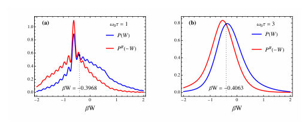
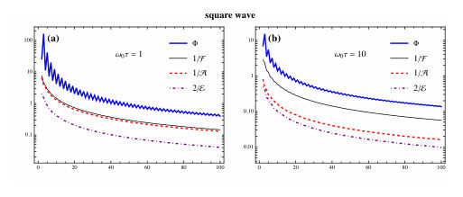
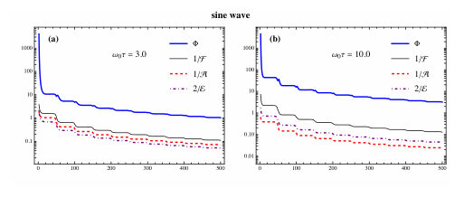
Summary. This paper derives a novel thermodynamic uncertainty relation for the work done in an open quantum system driven by time-dependent protocols. By combining the Cramér–Rao inequality with quantum Fisher information, the authors establish a bound relating the work variance to the system's dynamical activity and entropy production. This result provides a quantitative measure of non-equilibrium fluctuations in quantum thermodynamics.
Why it may be interesting. This work provides a rigorous, quantitative bound on the fluctuations of work in non-equilibrium quantum processes, extending fluctuation theorems into the realm of quantum estimation theory, which is highly relevant for quantum thermodynamics.
Main problem. The paper derives a thermodynamic uncertainty relation (TUR) for the work done in an open quantum system subjected to time-dependent driving and repeated energy measurements.
Main result. The derived bound is $ ext{Var}\,{\cal W}/[ au\partial_ au\langle{\cal W} angle]^2\ge 1/{\cal F}\ge\max(1/{\cal A},2/{\cal E})$, linking the work variance to the system's dynamical activity and entropy production.
Method. The analysis combines the Cramér–Rao inequality with the quantum Fisher information by perturbing the dissipative dynamics, leveraging the system's adherence to fluctuation theorems.
Model / system. The system is a piece-wise time-dependent Markovian open quantum system, modeled by a sequence of Hamiltonian quenches separated by finite-time Lindblad evolution. The dynamics are analyzed using a two-level system example.
Key observables. Work ($W$), Work Expectation Value ($\langle W angle$), Variance of Work ($ ext{Var } W$), Fisher Information (${\cal F}$), Dynamical Activity (${\cal A}$), and Dimensionless Entropy Production (${\cal E}$).
Important parameters / regimes. Switching time interval ($ au$), driving protocol (square-wave or sinusoidal), and the specific perturbation parameters ($ heta_1, heta_2$).
Assumptions / limitations. The protocol is modeled as a sequence of quenches separated by finite-time Lindblad evolution, and the Lindblad evolution is assumed to be Markovian and secular over the interval $ au$.
Figures summary. Figure 1 compares the forward and reverse work distributions for a two-level system under square-wave and sinusoidal driving, illustrating the Crooks FT. Figure 2 and 3 show the relationship between the derived bounds ($1/{\cal A}$ vs $2/{\cal E}$) and the Fisher information for specific driving protocols.
Paper structure. The paper establishes the framework by noting that work statistics obey fluctuation relations. It then applies estimation theory, using two independent perturbations to derive the core uncertainty relation, which is finally illustrated using specific two-level system examples (square-wave and sinusoidal driving).
We derive a thermodynamic uncertainty relation for work in an open quantum system driven by a time-dependent protocol and subject to repeated projective energy measurements. The protocol is represented by a sequence of protocol quenches separated by finite-time Lindblad evolution, so that work is accumulated at the quenches while dissipation occurs between them. The resulting work statistics obey the Gallavotti-Cohen symmetry to give rise to the Crooks and Jarzynski fluctuation relations. By perturbing the dissipative dynamics and combining the Cramér--Rao inequality with the quantum Fisher information, we obtain $\mathrm{Var}\,{\cal W}/[τ\partial_τ\langle{\cal W}\rangle]^2\ge 1/{\cal F}\ge\max(1/{\cal A},2/{\cal E})$, where $\langle{\cal W}\rangle$ is the work expectation value, $\mathrm{Var}\,{\cal W}$ is the variance of work, ${\cal F}$ is the Fisher information, ${\cal A}$ is the dynamical activity, ${\cal E}$ is the dimensionless entropy production, and $τ$ is the switching time interval between quenches. The two thermodynamic bounds follow from two independent perturbations that generate the same response of the work statistics. We illustrate the relation for a dissipative two-level system under square-wave and sinusoidal driving and show that the tighter thermodynamic bound can depend on the driving protocol and switching time scale.
Authors: Tong Wang, Mengjie Yang, Flore K. Kunst
Type: theory · Category: disordered systems and neural networks · PDF: https://arxiv.org/pdf/2609.17378v1
Analysis basis: full PDF text, analyzed in chunks
Topic relevance: analog quantum simulation 3/5 · driven-dissipative phase transition 3/5 · methods for driven-dissipative 3/5 · Keldysh / 2PI / non-Gaussian methods 2/5 · correlated / nonlocal dissipation 2/5 · non-equilibrium universality 2/5 · Frenkel-Kontorova 1/5 · quantum measurements 1/5
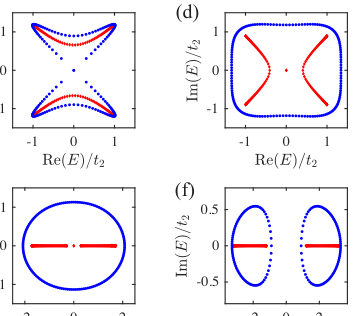
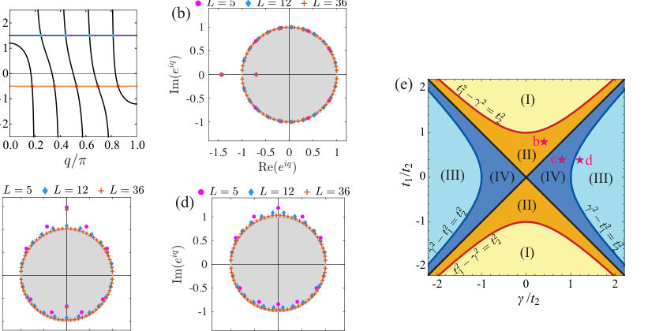
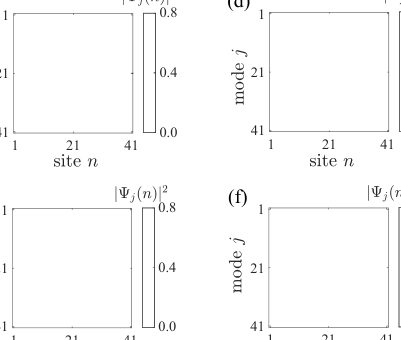
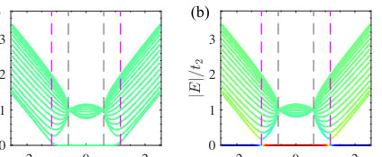
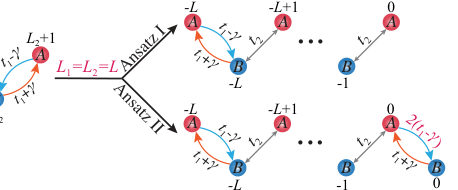
Summary. This paper analytically investigates the complex physics of domain walls in a nonreciprocal Su-Schrieffer-Heeger model. By employing advanced techniques like biorthogonal polarization, the authors characterize the emergence of additional localized states beyond standard topological modes. This work provides a detailed theoretical understanding of how interface geometry dictates the electronic structure in non-Hermitian quantum systems.
Why it may be interesting. The study of non-Hermitian systems, topological edge states, and interface physics is highly relevant to open quantum systems, where boundary effects and non-Hermiticity are crucial for understanding dissipation and energy flow.
Main problem. The study investigates domain-wall physics in a nonreciprocal Su-Schrieffer-Heeger (SSH) model, focusing on finding analytical eigenstate solutions under open boundary conditions.
Main result. The system exhibits additional localized states at finite energy detached from the bulk continuum due to domain walls, and in 2D, competing nonreciprocities allow for a tunable funneling regime.
Method. The authors use analytical techniques, including symmetry-based ansatzes and the concept of biorthogonal polarization, to derive closed-form quantization conditions for the wave number and wave functions.
Model / system. The model is a non-Hermitian (NH) SSH chain, which is nonreciprocal and features non-Hermitian skin effects. The analysis is extended to include domain walls (Type-A and Type-B interfaces) and a two-dimensional Lieb lattice.
Key observables. Eigenenergies, topological zero modes, skin modes, and the biorthogonal polarization (P).
Important parameters / regimes. Nonreciprocal hopping ratios ($\gamma, t_1, t_2$), boundary conditions (open vs. periodic), and the geometry of the interface.
Assumptions / limitations. The analysis often focuses on right eigenstates and utilizes plane-wave function ansatzes for the bulk states.
Figures summary. Figures illustrate the SSH model structure, compare PBC vs. OBC spectra, show wave function profiles for zero modes, and map out phase diagrams based on symmetry breaking and polarization.
Paper structure. The paper progresses from analyzing the basic NH SSH model (unbroken/broken unit cells) to deriving quantization conditions, and finally focuses on the complex physics introduced by domain walls, analyzing Type-A and Type-B interfaces separately.
We investigate domain-wall physics in a non-Hermitian Su-Schrieffer-Heeger model featuring the non-Hermitian skin effect and its higher-dimensional extensions, focusing on analytical eigenstate solutions under open boundary conditions. By gluing two Su-Schrieffer-Heeger chains with inverted coupling ratios together, we identify two distinct interface geometries, and derive closed-form quantization conditions for the complex wave number and wave functions using symmetry-based ansatzes. Besides conventional skin modes and topological zero modes, the domain walls generate additional localized states at finite energy that detach from the bulk open-boundary-condition continuum. We validate the analytical results by exact diagonalization, and further generalize the interface construction to a two-dimensional Lieb lattice, where competing nonreciprocities produce tunable funneling regimes towards codimension-one and codimension-two interfaces.
Authors: J. Furtado
Type: theory · Category: other · PDF: https://arxiv.org/pdf/2609.17176v1
Analysis basis: full PDF text, analyzed in chunks
Topic relevance: driven-dissipative phase transition 3/5 · methods for driven-dissipative 3/5 · non-equilibrium universality 3/5 · quantum measurements 2/5 · Keldysh / 2PI / non-Gaussian methods 1/5 · analog quantum simulation 1/5 · correlated / nonlocal dissipation 1/5 · scars & prethermalization 1/5
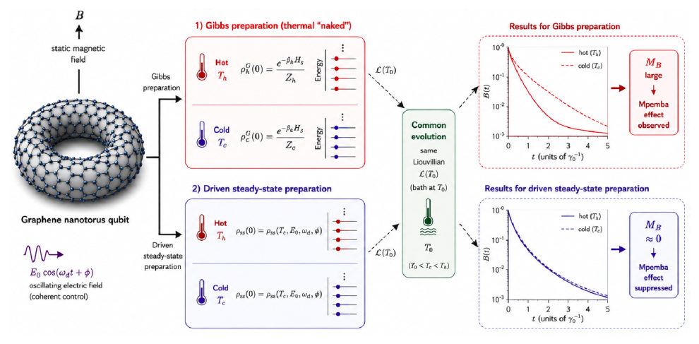
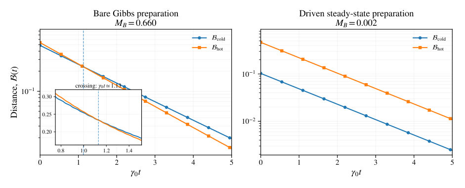
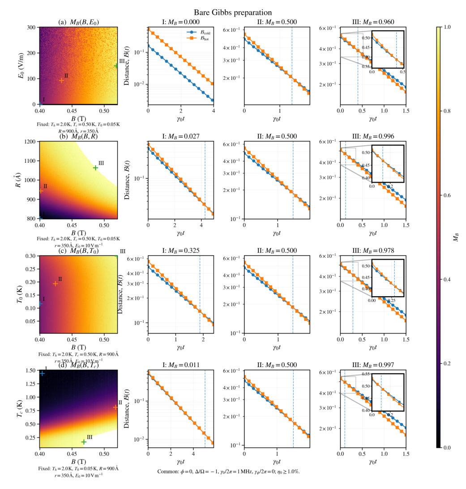
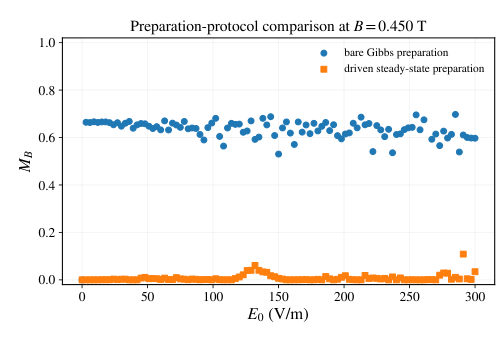
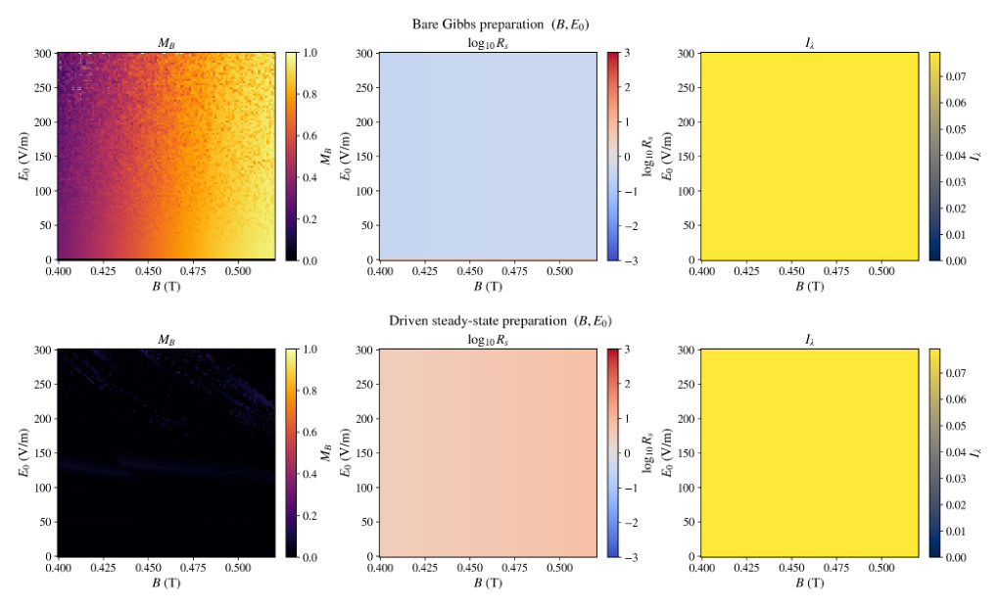
Summary. This theoretical study examines the quantum Mpemba effect in a graphene nanotorus qubit, revealing that the effect's strength is highly sensitive to how the initial state is prepared. By comparing bare Gibbs preparation against driven steady-state preparation, the authors show that the choice of protocol dictates the system's modal weights, leading to either a strong anomalous relaxation or near-complete suppression of the effect.
Why it may be interesting. This work provides a clear example of how non-equilibrium initial conditions, even when the final physics is identical, can fundamentally alter observable quantum dynamics, which is a key concept in open quantum systems and quantum control.
Main problem. The study investigates the quantum Mpemba effect (QMpE) and demonstrates that its magnitude is critically dependent on the specific protocol used to prepare the initial quantum state.
Main result. Bare Gibbs preparation leads to a strong QMpE ($M_B \approx 1$), whereas using a driven steady-state preparation almost completely suppresses the effect ($M_B \approx 0$).
Method. The analysis employs an open-system Liouvillian framework, comparing two distinct initial state preparation protocols (bare Gibbs vs. driven steady-state) while keeping the final evolution dynamics identical.
Model / system. The system is modeled as a magnetically tunable graphene nanotorus qubit, treated as an effective two-level system evolving under a Markovian master equation incorporating an external coherent drive.
Key observables. Mpemba parameter ($M_B$), distance to the final stationary state ($B_{h,c}(t)$), and the slow-sector weight ratio ($R_s$).
Important parameters / regimes. Magnetic field ($B$), electric field ($E_0$), and the preparation protocol itself (Bare Gibbs vs. Driven Steady-State).
Assumptions / limitations. The dynamics are analyzed within a Markovian approximation, and the comparison isolates the effect of initial state preparation, holding the final Liouvillian spectrum constant.
Figures summary. Figures compare the distance dynamics for both protocols, showing large $M_B$ for bare Gibbs and near-zero $M_B$ for driven steady-state. They also map the slow-sector ratio ($R_s$) onto parameter planes, confirming the protocol-dependent separation ($R_s < 1$ vs. $R_s > 1$).
Paper structure. The paper introduces the QMpE in the graphene qubit, defines the two competing preparation protocols, analyzes the resulting dynamics using Liouvillian mode decomposition, and concludes by linking the preparation protocol to the modal weights ($R_s$) that govern the observed Mpemba effect.
We investigate the quantum Mpemba effect in a graphene nanotorus qubit and show that its strength depends strongly on how the initial state is prepared. We compare two protocols that share the same final Hamiltonian, thermal bath, and Markovian Liouvillian: bare Gibbs preparation, in which the coherent drive is switched on only at the final quench, and driven steady-state preparation, in which the initial states are stationary states of the driven dynamics. Using the distance to the final stationary state and an integrated Mpemba parameter, we find broad regions of strong anomalous relaxation for bare Gibbs preparation, with $M_B$ approaching unity, whereas the driven steady-state protocol almost completely suppresses the effect. A Liouvillian-mode analysis reveals the mechanism: the bare Gibbs protocol typically yields a smaller hot-state weight in the slow active sector than the cold state, $R_s<1$, while the driven steady-state protocol predominantly gives $R_s>1$. Since the final Liouvillian spectrum is identical for both protocols at corresponding parameter points, the contrast originates from preparation-dependent modal weights rather than from changes in the decay-rate hierarchy. These results identify state preparation as a control parameter for anomalous quantum relaxation in a curved graphene qubit.
Authors: Vallée Kim
Type: theory · Category: other · PDF: https://arxiv.org/pdf/2609.17294v1
Analysis basis: full PDF text, analyzed in chunks
Topic relevance: quantum measurements 3/5 · analog quantum simulation 2/5 · methods for driven-dissipative 2/5 · quantum optics experiment 2/5 · Full counting statistics 1/5 · Keldysh / 2PI / non-Gaussian methods 1/5 · correlated / nonlocal dissipation 1/5 · driven-dissipative phase transition 1/5 · non-equilibrium universality 1/5
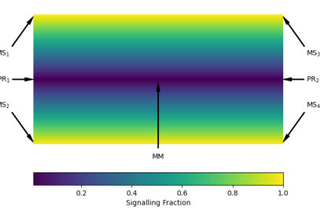
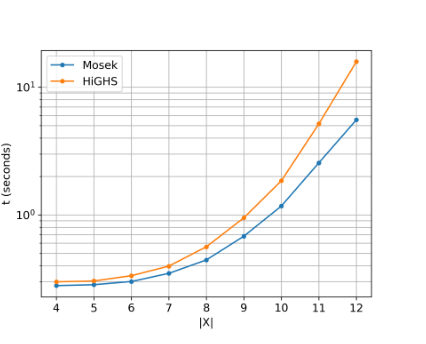
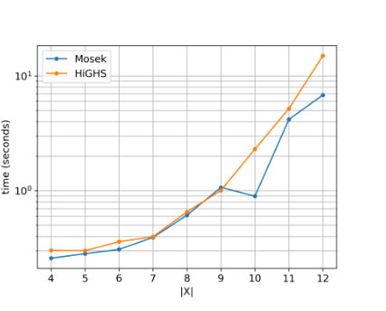
Summary. This paper introduces ConteXtuAlity, an open-source Python package designed to compute contextuality measures like the Contextual and Signalling Fractions. It formalizes contextuality using a sheaf-theoretic approach applied to empirical measurement data. The package allows theorists and experimentalists to quantify how much a measurement outcome deviates from classical expectations using linear programming solvers.
Why it may be interesting. While focused on contextuality rather than standard AMO Hamiltonians, the rigorous mathematical framework and the use of linear programming to quantify deviations from classical/non-contextual behavior are highly relevant for analyzing experimental data in quantum optics and open systems.
Main problem. The paper aims to develop a unified, open-source computational framework to quantify contextuality in quantum measurements.
Main result. It introduces the ConteXtuAlity package, which provides methods to compute the Contextual Fraction (CF) and Signalling Fraction (SF) using linear programming techniques.
Method. The core method involves modeling measurements using a sheaf-theoretic framework and calculating contextuality measures by solving linear programs based on empirical probability distributions.
Model / system. The framework analyzes general measurement scenarios $\langle X, M, O angle$, where $M$ is the set of measurement contexts. The input data is represented by an Empirical Model, which is a family of probability distributions over measurement outcomes.
Key observables. Contextual Fraction (CF) and Signalling Fraction (SF).
Important parameters / regimes. The structure of the measurement scenario ($\mathbf{X}, \mathbf{M}, \mathbf{O}$) and the underlying empirical probability distribution $e$.
Assumptions / limitations. The analysis is based on the sheaf theoretic approach to contextuality, and certain computations require external mathematical optimization solvers (e.g., MOSEK, HiGHS).
Figures summary. The notes mention Figure 1 showing the package logos, and Tables 1 and 2 detailing the methods and accessors for the MeasurementScenario and EmpiricalModel classes, respectively.
Paper structure. The paper introduces the package, details the mathematical framework (sheaf theory), implements core classes (MeasurementScenario, EmpiricalModel), and demonstrates functionality through examples like the KCBS and CHSH scenarios, culminating in benchmarks.
We present an open source Python package, ConteXtuAlity, for computing various quantities related to contextuality. This package features an interface to the sheaf-theoretic framework for contextuality, providing an implementation of measurement scenarios and empirical models as well as linear programs to compute the contextual fraction and the signalling fraction. In this work, we demonstrate the package's features and give examples of its use. We also provide benchmarks, demonstrating how performances scale with the size of measurement scenarios. The package is designed for both experienced theorists and newcomers to the field of contextuality alike, with an emphasis on flexibility and extensibility.
Authors: Marco Tuccio, Jason W. Rocks, Joshua E. Goldford
Type: theory · Category: statistical mechanics · PDF: https://arxiv.org/pdf/2609.17339v1
Analysis basis: full PDF text, analyzed in chunks
Topic relevance: driven-dissipative phase transition 3/5 · non-equilibrium universality 3/5 · Keldysh / 2PI / non-Gaussian methods 2/5 · correlated / nonlocal dissipation 2/5 · methods for driven-dissipative 2/5 · analog quantum simulation 1/5 · quantum measurements 1/5




Summary. This work investigates the computational power of chemical reaction networks by training them to reproduce complex target functions. The authors found that the ability to compute these functions is critically dependent on internal thermodynamic drives that violate detailed balance. This identifies non-equilibrium energy coupling as the primary resource governing chemical computation expressivity.
Why it may be interesting. The focus on non-equilibrium drives and the use of complex, energy-derived parameters to control computation is highly relevant to open quantum systems and non-equilibrium statistical mechanics.
Main problem. The study aims to determine the physicochemical rules governing the computational expressivity of chemical systems, specifically identifying which energy parameters control the ability to compute target nonlinear functions.
Main result. Internal thermodynamic drives, capable of breaking detailed balance, were identified as the dominant resource conferring steady-state computational expressivity in chemical reaction networks.
Method. The authors trained chemical reaction networks (CRNs) to match target functions by minimizing a mean squared error loss function, using implicit differentiation to calculate gradients.
Model / system. The system is a Chemical Reaction Network (CRN) modeled using mass-action kinetics in a CSTR setting. The kinetics are parameterized by standard chemical potentials, transition-state energies, and nonconservative thermodynamic drives.
Key observables. Computational expressivity, quantified by $H_{50}$ (the target complexity where success rate hits 50%), and the coefficient of determination ($R^2$) for fit quality.
Important parameters / regimes. Thermodynamic drives ($D_\alpha$), standard chemical potentials ($\mu^\circ_i$), and transition-state energies ($G^\ddagger_\alpha$).
Assumptions / limitations. The analysis assumes that the steady state found via root-finding accurately represents the true dynamics, requiring quasistatic verification.
Figures summary. Figures illustrate the network structure, the training loop, and show comparisons of fit capabilities across different parameter sets (e.g., parameter-freezing studies).
Paper structure. The paper establishes the problem of chemical computation expressivity, details the CRN model parameterized by energetic terms, outlines the training methodology using optimization, and presents parameter-freezing studies to isolate the most critical energetic resource.
Living systems compute with chemistry by mapping environmental signals onto specific internal chemical states. Despite recent advances in molecular programming, it remains unclear which physicochemical features control the computational expressivity of chemical systems. Here we inverse-design thermodynamically consistent chemical reaction networks whose steady-state response to an environmental input computes a target nonlinear function. Using implicit differentiation we train the free-energy landscape directly: standard chemical potentials, transition-state energies and thermodynamic drives. Increasingly large networks generated by elementary ligation and cleavage steps fit increasingly complex nonmonotonic polynomial functions, with expressivity scaling logarithmically with network size, predicted primarily by the number of reactions. Training individual energetic parameter classes reveals that internal thermodynamic drives, capable of breaking detailed balance, dominate trainability, with comparable performances achieved only by pairs of parameter classes. These results identify nonequilibrium drive as the most effective single resource for steady-state computational expressivity in chemical reaction networks.
Authors: Duilio De Santis, Sambuddha Chattopadhyay, Marios H. Michael, Andrea Cavalleri, Gil Refael, Patrick A. Lee, Eugene A. Demler
Type: theory · Category: other · PDF: https://arxiv.org/pdf/2609.16137v1
Analysis basis: full PDF text, analyzed in chunks
Topic relevance: driven-dissipative phase transition 3/5 · methods for driven-dissipative 3/5 · Keldysh / 2PI / non-Gaussian methods 2/5 · non-equilibrium universality 2/5 · analog quantum simulation 1/5 · correlated / nonlocal dissipation 1/5 · quantum measurements 1/5
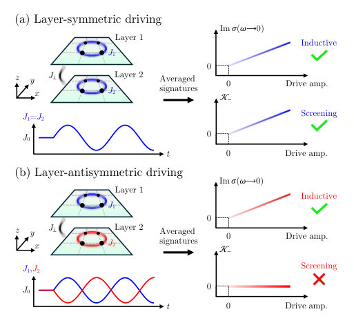
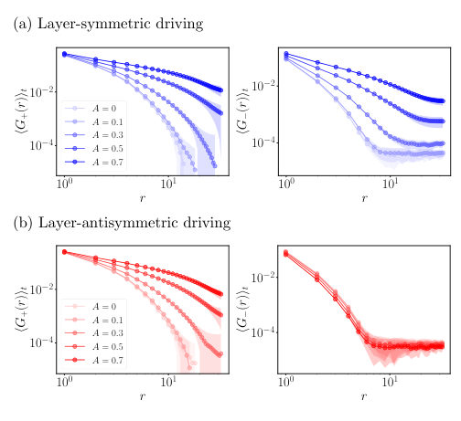
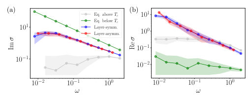
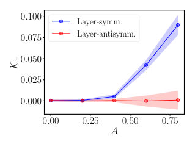
Summary. This theoretical study investigates how periodic driving affects coherence in superconducting bilayers, comparing optical conductivity to magnetic screening. By modeling two types of drive symmetries, the authors find that only layer-symmetric driving enhances both observables simultaneously. This establishes a necessary symmetry condition for interpreting experimental reports of enhanced superconducting behavior.
Why it may be interesting. The work provides a crucial symmetry diagnostic tool for interpreting complex, out-of-equilibrium measurements in high-temperature superconductors, linking optical response to underlying magnetic coherence.
Main problem. The study aims to theoretically distinguish between enhanced superconducting-like optical conductivity and enhanced magnetic screening in phase-disordered superconducting bilayers subjected to periodic driving.
Main result. Only a layer-symmetric drive enhances both the optical conductivity and the magnetic screening response, providing a symmetry diagnostic for interpreting experimental measurements in cuprates.
Method. The analysis uses a bilayer XY model Hamiltonian and simulates dynamics using overdamped Langevin equations to calculate phase correlators and linear response functions.
Model / system. The system is a superconducting bilayer, modeled by phase variables $\theta_1$ and $\theta_2$, coupled by Josephson interactions. The dynamics are driven by modulating the in-plane superfluid stiffness in two distinct, symmetric, or antisymmetric ways.
Key observables. Layer-averaged phase correlator ($G_+$) for optical conductivity, and the relative-phase correlator ($G_-$) related to magnetic screening/counterflow.
Important parameters / regimes. Drive symmetry (symmetric vs. antisymmetric), temperature relative to $T_c$, and the strength of the applied magnetic field/vector potential.
Assumptions / limitations. The analysis assumes the system is above the equilibrium transition temperature ($T > T_c$) and neglects amplitude fluctuations of the superconducting order parameter.
Figures summary. Figures illustrate that symmetric driving enhances both $G_+$ and $G_-$, while antisymmetric driving enhances $G_+$ but leaves $G_-$ largely unaffected, confirming the diagnostic.
Paper structure. The paper establishes the theoretical framework using the bilayer XY model, analyzes the response to layer-symmetric versus layer-antisymmetric drives by calculating both optical conductivity and magnetic screening kernels, and concludes by interpreting the symmetry dependence of the two observables.
Recent experiments demonstrating superconducting-like characteristics in materials above their equilibrium transition temperatures following strong sub-picosecond optical excitation have stimulated theoretical interest in phase-disordered superconductors subject to a periodically modulated superfluid stiffness. Previous analyses of the single-layer optical conductivity have shown that such a drive can enhance the low-frequency $1/ω$ response, even when the period-averaged stiffness remains unchanged. We extend these studies to bilayer systems, such as the YBa$_2$Cu$_3$O$_{6+x}$ (YBCO) cuprate, by considering drives with different symmetries. Specifically, we investigate a layer-symmetric drive, in which the two planes stiffen and soften simultaneously, and a layer-antisymmetric drive, in which one plane stiffens while the other softens. Both drives enhance correlations of the layer-averaged phase and generate comparable superconducting-like optical conductivities. Only the symmetric drive, however, strengthens relative-phase locking and the associated counterflow response to a magnetic field parallel to the planes. Thus, an enhanced $1/ω$ optical conductivity does not by itself imply enhanced magnetic screening. In view of applications to driven YBCO, where superconducting-like in-plane optics and transient diamagnetism have both been reported, our result provides a symmetry diagnostic: within a phase-synchronization mechanism, the experimentally active low-frequency stiffness modulation must contain a substantial layer-symmetric component.
Authors: Matthias Carosi, Björn Garbrecht, Silvia Pla, Nils Wagner, Edward Wang
Type: theory · Category: statistical mechanics · PDF: https://arxiv.org/pdf/2609.17447v1
Analysis basis: full PDF text, analyzed in chunks
Topic relevance: Keldysh / 2PI / non-Gaussian methods 3/5 · methods for driven-dissipative 3/5 · analog quantum simulation 1/5 · correlated / nonlocal dissipation 1/5 · driven-dissipative phase transition 1/5 · non-equilibrium universality 1/5 · quantum measurements 1/5 · scars & prethermalization 1/5
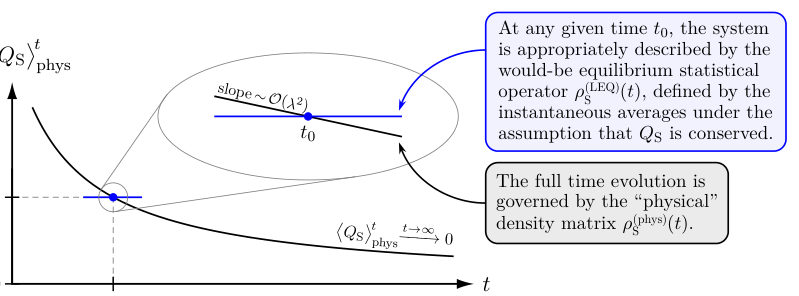
Summary. This paper develops a rigorous framework to calculate how an approximately conserved charge relaxes in interacting quantum systems near equilibrium. It achieves this by showing that two distinct theoretical approaches—Zubarev's NSO method and a simpler local-equilibrium construction—yield the same result based on equilibrium correlation functions. The work is significant for providing a practical, verifiable tool for studying non-equilibrium dynamics in fields like particle physics and condensed matter.
Why it may be interesting. The explicit comparison between two formal derivations (NSO vs. local equilibrium) for the relaxation rate provides a robust, practical alternative for calculating non-equilibrium dynamics, which is highly relevant for open quantum systems.
Main problem. The paper investigates the relaxation dynamics of an approximately conserved charge in interacting quantum systems as they approach local equilibrium.
Main result. The leading relaxation rate is determined by an equilibrium correlation function of the charge-violating operator, a result confirmed by both Zubarev's NSO approach and a simpler local-equilibrium construction.
Method. The authors employ advanced non-equilibrium statistical mechanics techniques, including Zubarev's Non-Equilibrium Statistical Operator (NSO) approach and deriving an alternative local-equilibrium construction.
Model / system. The study applies to general interacting quantum systems, specifically modeling the weak violation of a continuous global symmetry (like $B+L$ charge) via a small perturbation ($\lambda H( ext{viol.})$) to an otherwise conserved Hamiltonian.
Key observables. The relaxation rate ($\Gamma_{ ext{relax}}$) of the charge expectation value, the equilibrium correlation function of the charge-violating operator, and the resulting diffusion-relaxation equation.
Important parameters / regimes. The small coupling constant $\lambda$ controlling charge violation, and the separation of timescales ($ au_{ ext{micro}} \ll au_{ ext{macro}}$).
Assumptions / limitations. The key assumptions include weak charge violation and the separation of timescales between fast microscopic correlations and slow macroscopic charge relaxation.
Paper structure. The paper systematically introduces the problem, presents two complementary derivations for the relaxation rate (NSO and local equilibrium), connects relaxation to spatial diffusion, and concludes with applications to electroweak $B+L$ washout and a perturbative scalar model.
We investigate the relaxation of an approximately conserved charge in interacting quantum systems close to local equilibrium. To this end, we provide a pedagogical review of Zubarev's non-equilibrium statistical operator approach in the minimal setting of a single non-conserved charge and apply it to the problem at hand. We explicitly highlight the physical assumptions that lead to a local relaxation law: weak charge violation, a separation between the short timescale of microscopic correlations and the much longer timescale of charge relaxation, and the resulting loss of microscopic memory. Under these conditions, the leading relaxation rate is determined by an equilibrium correlation function of the charge-violating operator. We show that the same result follows from a simpler local-equilibrium construction based on the system's evolution over an intermediate timescale, providing a direct alternative for practical calculations and making the common physical ingredients of the two approaches explicit. Beyond the decay law itself, we relate the relaxation rate to the equilibrium diffusion of the same charge. We then allow the charge density to vary in space, which leads to a diffusion-relaxation equation. Finally, we illustrate the formalism through electroweak $\mathrm{B+L}$ washout and a perturbative scalar model, where agreement with the linearized Boltzmann equation establishes a direct connection between equilibrium-correlator and kinetic descriptions.
Authors: Marcin Jastrzebski, Shang Yu, Raj B. Patel, Oleksandr Kyriienko
Type: both · Category: quantum information and computing · PDF: https://arxiv.org/pdf/2609.17352v1
Analysis basis: full PDF text, analyzed in chunks
Topic relevance: quantum measurements 3/5 · quantum optics experiment 3/5 · analog quantum simulation 2/5 · interference shaping light 2/5 · QC/QI experiment 1/5
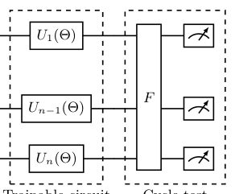
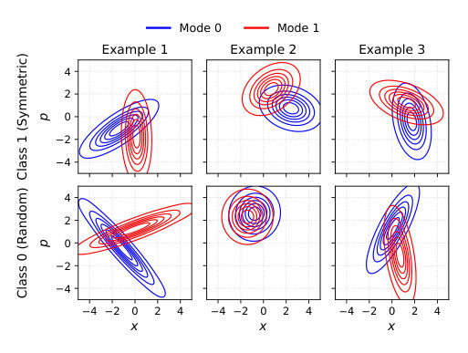
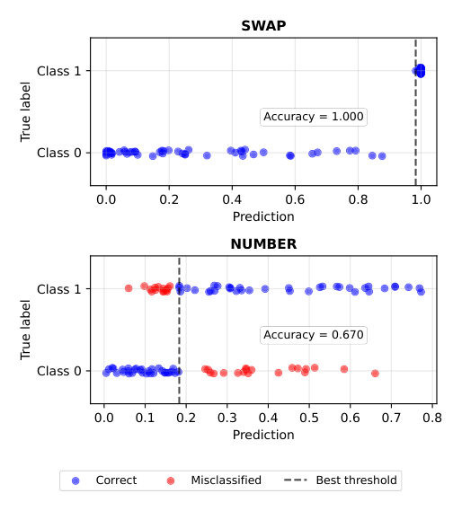
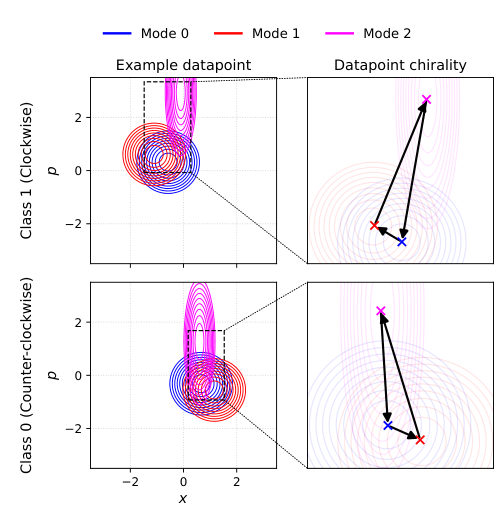
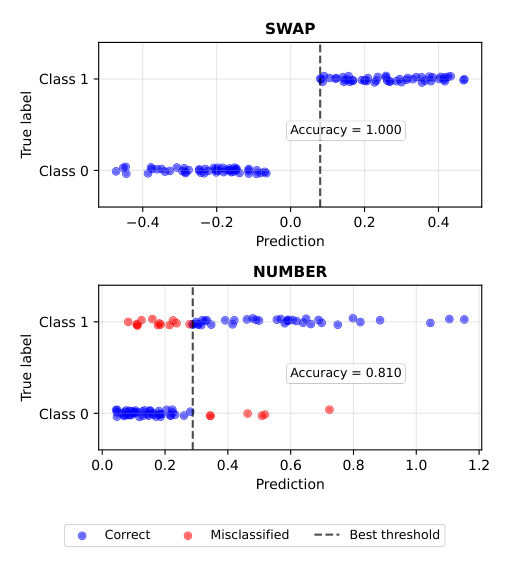
Summary. This paper introduces an adaptive quantum machine learning framework designed to analyze multi-instance quantum data by focusing on the relationships between states. Using CV photonic systems, the model accesses higher-order correlations via global measurements like the Bargmann invariant. It proves that this adaptive approach is vastly more resource-efficient than traditional 'measure-first' methods for tasks like sensing and classification.
Why it may be interesting. This work directly addresses the scalability bottleneck in quantum machine learning by providing a measurement strategy that efficiently accesses high-order quantum correlations, which is crucial for quantum sensing and simulation.
Main problem. Developing an adaptive learning framework for quantum machine learning (QML) that can extract key information residing in the correlations between multiple quantum states rather than in the states themselves.
Main result. The adaptive model significantly outperforms non-adaptive 'measure-first' approaches by avoiding the rapid scaling of estimation costs with the number of states ($n$), achieving high accuracy with far fewer measurements.
Method. The framework uses local, trainable quantum transformations on each input state, followed by a global measurement designed to probe multi-state correlations, such as the $n$-state Bargmann invariant.
Model / system. The work is demonstrated using continuous-variable (CV) photonic systems, which naturally support the required quantum data generation, local transformations, and interference measurements.
Key observables. The $n$-state Bargmann invariant ($\Delta_n$), geometric phase ($\varphi_g$), and pairwise fidelity ($\Delta_2$).
Important parameters / regimes. The number of instances, $n$, and the required number of inference shots (where the adaptive model shows massive savings).
Assumptions / limitations. The model assumes pure input states ($ ho_i = |\psi_i angle\langle\psi_i|$), and its advantage is shown over fixed, non-adaptive measurement strategies.
Figures summary. Figures illustrate the model architecture (local transformations followed by a global test), and show comparative results for tasks like hidden relationship detection and chirality classification against local-observable models.
Paper structure. The paper introduces the adaptive relational learning framework, details the use of the Bargmann invariant for accessing higher-order correlations, and benchmarks this approach against classical shadow-based methods across several quantum tasks.
Loading multiple quantum states in parallel into a quantum machine learning (QML) model can unlock learning tasks where key information resides in the \emph{relations} between states rather than in individual states. We introduce an adaptive relational learning framework for such multi-instance quantum data that accesses pairwise and higher-order relations. Our model combines global measurements via SWAP or CYCLE tests for evaluating an $n$-state Bargmann invariant with shallow trainable transformations applied locally to each input state. We demonstrate the approach for continuous-variable (CV) photonic systems, which naturally provide access to quantum data and necessary computing operations. We solve tasks involving hidden relationship detection, geometric phase classification, and sensing in the presence of an unknown shared nuisance interaction. We benchmark the adaptive model against a non-adaptive ``measure-first'' approach based on continuous-variable classical shadows, and show that the cost of shadow estimation grows rapidly with $n$, while our model avoids this dependence. Already for $n=2$, we achieve perfect test accuracy $A=1.0$ with $500$ inference shots, improving average test accuracy over the shadow-based method by $ΔA=0.15$ while using $100$ times fewer shots per data point. Our work opens routes to sensing and quantum-data applications where adaptive photonic QML can access relational features that are costly to recover with non-adaptive, measure-first models.
Authors: Nicolas Laurent-Puig, Laura dos Santos Martins, Luis Bugalho, Santiago Scheiner, Majid Hassani, Sean William Moore, Damian Markham, Eleni Diamanti
Type: both · Category: quantum information and computing · PDF: https://arxiv.org/pdf/2609.16743v1
Analysis basis: full PDF text, analyzed in chunks
Topic relevance: QC/QI experiment 3/5 · quantum measurements 3/5 · quantum optics experiment 3/5 · interference shaping light 1/5

Summary. This paper presents a noise-robust protocol for private quantum networked sensing, allowing multiple distant sensors to estimate a global function while keeping their individual measurements secret. By utilizing entangled GHZ states and incorporating a rigorous state certification step, the authors guarantee a quantifiable level of privacy ($\epsilon$) alongside high estimation precision. This work is significant for realizing secure, distributed quantum measurement tasks.
Why it may be interesting. The work provides a concrete, experimentally relevant protocol for quantum networking that explicitly tackles the security concern of information leakage, which is a major hurdle for deploying quantum sensing technologies.
Main problem. The paper addresses the challenge of performing private quantum networked sensing, where a global function must be estimated from local parameters without revealing the individual local parameters to potential malicious parties.
Main result. They introduce a noise-robust protocol using GHZ states that achieves perfect privacy ($\epsilon=1$) for the estimation of the average phase, demonstrating that entanglement is crucial for maintaining both high precision and privacy.
Method. The protocol involves a three-step process: state certification using stabilizer measurements, followed by quantum estimation using local unitaries, and repeating this process multiple times to achieve noise robustness.
Model / system. The system utilizes spatially separated quantum sensors entangled via an n-qubit Greenberger-Horne-Zeilinger (GHZ) state, which is experimentally realized using a high-fidelity source based on SPDC in a Sagnac interferometer.
Key observables. Quantum Fisher Information Matrix (QFIm), privacy measure ($\epsilon$), fidelity ($F$), and the estimation variance ($ ext{Var}(\hat{\phi})$).
Important parameters / regimes. Number of copies ($N$), maximum allowed failure rate ($\Delta T$), and the number of estimation rounds ($ u$).
Assumptions / limitations. The security analysis relies on bounding the fidelity $F$ using the soundness $S(N, \Delta T)$ derived from the certification process, assuming the existence of a Verifier party.
Figures summary. Figure 1 shows the physical setup for the GHZ state source. Figure 7 illustrates the trade-off between privacy ($\epsilon$) and statistical significance ($\alpha$) for different attack scenarios.
Paper structure. The paper first establishes the theoretical framework for private sensing using GHZ states. It then details the experimental implementation using state certification to bound the fidelity, followed by the quantum estimation procedure. Finally, it provides rigorous mathematical bounds on the soundness and privacy.
Entangling distant quantum sensors is a key application of future quantum networks, allowing for the estimation of global functions of local parameters, with precision that is not possible with stand-alone, individual, quantum sensors. However, with this advantage comes the risk of information leakage over the network via possible malicious parties. It is often particularly important that local parameters remain unknown and that only the global function is shared across the network. Recently, the notion of privacy has been introduced in this context, which ensures that only the agreed function of parameters is shared over the network, even when malicious parties control the network itself, whilst maintaining the estimation advantage. In this work, we introduce a noise-robust protocol for private quantum networked sensing, which we realise using a high-fidelity Greenberger-Horne-Zeilinger (GHZ) state source. We further run a comparative analysis and simulate attacks using three different quantum states, a four-qubit GHZ state, two Bell pairs, and a fully separable state. Our results highlight the clear advantage of GHZ states in maintaining high precision, accuracy, and privacy for the distributed estimation task.
Authors: M. Crotti, F. Cavaliere, D. Ferraro, G. Benenti, M. Sassetti
Type: theory · Category: statistical mechanics · PDF: https://arxiv.org/pdf/2609.16781v1
Analysis basis: full PDF text, analyzed in chunks
Topic relevance: non-equilibrium universality 3/5 · Keldysh / 2PI / non-Gaussian methods 2/5 · methods for driven-dissipative 2/5 · correlated / nonlocal dissipation 1/5 · driven-dissipative phase transition 1/5 · scars & prethermalization 1/5
Summary. This theoretical study analyzes the quantum Mpemba effect in an oscillator coupled to a bath, proving that the effect requires non-Markovian dynamics. The key finding is that the anomalous fast relaxation is entirely enabled by the initial-slip dynamics generated when the system-bath coupling is suddenly switched on.
Why it may be interesting. This work provides a deep, non-trivial understanding of non-equilibrium relaxation dynamics in open quantum systems, showing how transient, non-Markovian correlations (initial-slip) can fundamentally alter macroscopic relaxation behavior.
Main problem. The paper investigates the quantum Mpemba effect, which describes the counter-intuitive phenomenon where a system initially further from equilibrium relaxes faster than one initially closer.
Main result. The quantum Mpemba effect is shown to be critically dependent on the initial-slip dynamics generated by the sudden switch-on of the system-bath interaction, as neglecting this term suppresses the anomalous relaxation.
Method. The authors derive exact analytical criteria by analyzing the time evolution of the covariance matrix for a quantum harmonic oscillator coupled to a bosonic bath.
Model / system. The model is a quantum harmonic oscillator linearly coupled to a bosonic environment (Caldeira–Leggett model). The analysis uses factorized thermal initial states and examines dynamics across various coupling regimes.
Key observables. The diagnostic measure is the Frobenius distance, $D_\alpha(t)$, and the sign change of $\Delta D(t) = D_c(t) - D_h(t)$ indicates the Mpemba effect.
Important parameters / regimes. Key parameters include the initial temperatures ($T$ and $T_\alpha$), the coupling strength ($\gamma_0$), and the bath cutoff frequency ($\omega_D$). The analysis focuses on regimes beyond weak-coupling and Markovian approximations.
Assumptions / limitations. The analysis assumes the dynamics remain Gaussian, and the core finding relies on the inclusion of the initial-slip dynamics, which is absent in the Born-Markov approximation.
Figures summary. Figures illustrate the long-time behavior of the difference function $F(t)$, showing periodic sign changes indicative of the Mpemba effect when initial-slip dynamics are included.
Paper structure. The paper progresses by first establishing the general framework using the covariance matrix, deriving criteria for the effect, and then rigorously demonstrating that the initial-slip contribution is the necessary ingredient for the effect to manifest, contrasting this with the results obtained when this term is neglected.
We investigate the quantum Mpemba effect, whereby a system initially farther from equilibrium relaxes faster than one initially closer to equilibrium, emerging in a quantum harmonic oscillator linearly coupled to a bosonic environment. Starting from factorized thermal states at different temperatures, we derive exact analytical criteria for the occurrence of the quantum Mpemba effect valid also beyond the typically considered weak-coupling and Markovian approximations. Most importantly, we show that the effect is enabled by the initial-slip dynamics generated by the sudden switch-on of the system-bath interaction. Neglecting this contribution completely suppresses the anomalous relaxation, identifying transient system-bath correlations as the key ingredient underlying the quantum Mpemba effect.
Authors: Ricardo J. S. Afonso, Pedro V. Paraguassú, Thiago Werlang, Daniel Valente
Type: theory · Category: statistical mechanics · PDF: https://arxiv.org/pdf/2609.17239v1
Analysis basis: full PDF text, analyzed in chunks
Topic relevance: Keldysh / 2PI / non-Gaussian methods 3/5 · methods for driven-dissipative 3/5 · Frenkel-Kontorova 1/5 · correlated / nonlocal dissipation 1/5 · driven-dissipative phase transition 1/5 · non-equilibrium universality 1/5
Summary. This paper theoretically investigates quantum Brownian motion subjected to a temperature gradient, leading to the prediction of quantum thermophoresis. Using the Feynman-Vernon path integral approach, the authors derive the exact quantum influence functional and an effective Langevin equation. The results confirm that quantum effects manifest in both the low and high-temperature limits, extending classical understanding into the quantum domain.
Why it may be interesting. This work provides a rigorous quantum generalization of classical thermophoresis, extending the analysis into the quantum regime where non-equilibrium effects are crucial for understanding self-organization.
Main problem. The paper investigates how quantum Brownian motion is affected by a spatially varying temperature gradient, focusing on the phenomenon of quantum thermophoresis.
Main result. The authors derive an exact quantum influence functional and show that both the fully quantum (low T) and semiclassical (high T) limits exhibit signatures of quantum thermophoresis.
Method. The primary method involves using the Feynman-Vernon path integral approach to derive the influence functional, followed by deriving an effective, non-Markovian quantum Langevin equation.
Model / system. The system is a quantum Brownian particle coupled to a bath modeled as a continuum of local thermal baths, allowing for a position-dependent temperature profile T(X).
Key observables. The quantum influence functional F[x, x'], the effective Langevin equation for the center of mass, and the derived friction coefficient $\eta_{ ext{eff}}[x]$ and diffusion coefficient $D_{ ext{eff}}(x)$.
Important parameters / regimes. Temperature gradient T(X), high-temperature limit, low-temperature limit, and the Ohmic regime.
Assumptions / limitations. The environment is modeled as a continuum of independent local baths, and the derivation relies on path integral techniques and approximations in the semiclassical limit.
Figures summary. Not specified.
Paper structure. The paper builds from the generalized system-plus-reservoir model to derive the influence functional via path integrals. It then analyzes the resulting dynamics by deriving the effective Langevin equation, examining the high-temperature and low-temperature limits to confirm quantum thermophoresis.
When a classical Brownian particle is subjected to a temperature gradient it can undergo thermophoresis, i.e., the particle gets transported towards the colder regions of the environment, which bears relevant consequences to nonequilibrium self-organization. Here, we investigate how the quantum Brownian motion is affected by a temperature gradient. We employ a recently proposed generalized system-plus-reservoir model, where one assumes a continuum field of thermal baths. As our main result, we obtain the quantum influence functional, within the Feynmann-Vernon path integral approach. To test convergence, we derive an effective Langevin equation for the center of mass of the quantum wavepacket, and show that it coincides with the classical Langevin equation at high temperatures. Both the fully quantum (low temperatures) and the semiclassical (high temperature) limits show signatures of quantum thermophoresis in the quantum Brownian motion, a so far unexplored effect.
Authors: Yuya Kusuki, Hiroyasu Tajima, Shion Yamashika
Type: theory · Category: statistical mechanics · PDF: https://arxiv.org/pdf/2609.16153v1
Analysis basis: full PDF text, analyzed in chunks
Topic relevance: non-equilibrium universality 3/5 · Keldysh / 2PI / non-Gaussian methods 1/5 · analog quantum simulation 1/5 · correlated / nonlocal dissipation 1/5 · driven-dissipative phase transition 1/5 · methods for driven-dissipative 1/5 · quantum measurements 1/5 · scars & prethermalization 1/5

Summary. This work establishes that 'completeness' is a vital physical concept for measuring symmetry breaking in quantum many-body systems. The authors propose the fidelity-based Logarithmic Characteristic Function (LCF) as a superior diagnostic tool compared to Entanglement Asymmetry (EA). LCF's component-wise nature allows it to resolve subtle dynamical features, such as the Mpemba effect, that are masked by EA's saturation or averaging properties.
Why it may be interesting. It provides a rigorous, information-theoretic tool (LCF) to diagnose non-equilibrium dynamics and symmetry restoration in complex quantum many-body systems, which is crucial for understanding thermalization and quench dynamics.
Main problem. The paper investigates the physical importance of 'completeness' in characterizing symmetry-restoration dynamics in many-body systems, arguing that incomplete measures can miss essential physical features.
Main result. The Logarithmic Characteristic Function (LCF), when extended using fidelity, provides a more complete diagnostic tool than Entanglement Asymmetry (EA) because it avoids saturation and averaging effects that obscure dynamics like the Mpemba effect.
Method. The authors introduce and analyze the LCF, a generalization of the string order parameter, and compare its properties against EA using resource-theoretic concepts.
Model / system. The study applies to general many-body systems, including spin-chain quenches (XXZ/XXX), single-qubit systems under noise, and quantum field theories (CFT).
Key observables. Logarithmic Characteristic Function (LCF) components, Entanglement Asymmetry (EA), and the detection of symmetry-restoration phenomena like the Mpemba effect.
Important parameters / regimes. Finite symmetry group size |G|, time evolution (quench dynamics), and the thermodynamic limit.
Assumptions / limitations. The completeness of the LCF family is rigorously established only for exact i.i.d. pure-state conversion for finite groups, though its components are shown to be physically relevant for mixed states.
Figures summary. Figure 1 illustrates how EA fails to capture the Mpemba effect in both finite group saturation and group averaging scenarios, while the LCF successfully distinguishes these dynamics.
Paper structure. The paper builds from the definition of completeness in quantum information to introducing the LCF for mixed states, comparing its advantages over EA in detecting subtle dynamical features in various physical models.
Completeness is widely recognized in quantum information as an important property of a family of monotones, because it ensures that no information relevant to state conversion is lost. We show that completeness is also physically important in many-body systems: an incomplete measure of symmetry breaking can miss essential features of symmetry-restoration dynamics. We study the logarithmic characteristic function (LCF), also known as the string order parameter, whose full family is complete for exact i.i.d. pure-state conversion under symmetry-preserving operations for finite groups. We introduce a fidelity-based extension of the LCF to mixed states and identify two concrete advantages over entanglement asymmetry (EA). First, for a finite symmetry group $G$, EA is bounded by $\log |G|$ and can approach the same saturated value for different initial states in the thermodynamic limit, making their relaxation curves indistinguishable and preventing the identification of a discrete-symmetry Mpemba effect. By contrast, the LCF can remain extensive, with a coefficient that depends on the initial state and time, and therefore continues to distinguish their relaxation dynamics. Second, different LCF components can exhibit distinct relaxation and crossing behavior, including cases in which EA shows no crossing. We demonstrate these advantages in spin-chain quenches and a single-qubit system under depolarizing noise. We also develop a replica construction for the fidelity-based LCF in quantum field theory and derive analytical results for conformal field theory.
Authors: Suvodip Mukherjee
Type: theory · Category: statistical mechanics · PDF: https://arxiv.org/pdf/2609.16534v1
Analysis basis: full PDF text, analyzed in chunks
Topic relevance: Keldysh / 2PI / non-Gaussian methods 3/5 · methods for driven-dissipative 2/5 · correlated / nonlocal dissipation 1/5 · driven-dissipative phase transition 1/5 · non-equilibrium universality 1/5 · quantum measurements 1/5
Summary. This work pioneers a statistical mechanical approach to model the evolution of black holes across cosmic time and mass scales. By employing the Kramers-Moyal expansion, the authors translate the complex, stochastic evolution into a tractable mathematical framework. This allows astrophysicists to infer underlying physical processes by analyzing the macroscopic distribution function using multi-messenger data.
Why it may be interesting. The use of the Kramers-Moyal expansion to model a complex, multi-scale astrophysical system like black hole populations provides a powerful analogy to open quantum systems theory, where master equations and moment expansions are standard tools for describing irreversible dynamics.
Main problem. The primary challenge is developing a framework to understand the formation and evolution of black holes across vast mass ranges and cosmic timescales, which cannot be directly observed.
Main result. The authors establish a statistical mechanical description using the Kramers-Moyal expansion to model the evolution of the black hole distribution function ($ ho_{m, au}$). This allows for a data-driven understanding of underlying physics even when microscopic processes are unknown.
Method. The evolution is modeled using non-equilibrium statistical mechanics, deriving the distribution function's change via moment expansions derived from the characteristic function, leading to the Kramers-Moyal form.
Model / system. The system is the population of black holes in the Universe, characterized by mass ($m$) and cosmic time ($ au$). The evolution is treated as a stochastic process governed by a distribution function $ ho(m, au)$.
Key observables. The black hole distribution function ($ ho_{m, au}$), which describes the number density of black holes at a given mass and time.
Important parameters / regimes. Mass ($m$), cosmic time ($ au$), and the Kramers-Moyal coefficients ($D_n$) which characterize the drift and diffusion of the process.
Assumptions / limitations. The analysis uses a perturbative expansion in the time step ($\Delta au$) and assumes local stationarity in observation time, while acknowledging that the process is generally non-Markovian.
Figures summary. Figure 1 schematically illustrates the correspondence between underlying stochastic microstates and the macroscopic distribution function. Figure 2 likely depicts the evolution of the distribution function across mass and time via trajectories and transition currents.
Paper structure. The paper builds by first identifying the observational gap (black hole evolution), then formalizing the problem using non-equilibrium statistical mechanics, deriving the evolution equation via moment expansions, and finally mapping this structure onto the Kramers-Moyal expansion coefficients.
Black holes in the Universe span nearly ten orders of magnitude in mass over a large cosmic timescale, dating back to at least the Universe's early history, when it was only a few hundred million years old. The formation and evolution of these objects remain a mystery because no direct probe can trace each black hole across the full mass range and cosmic time. This work shows, for the first time, a statistical mechanical description of black hole evolution. I show that though each black hole and its evolution are governed by stochastic processes, one can make a macroscopic description of the distribution function of black holes in the Universe, and its evolution over the entire mass range and cosmic time can be expressed in terms of the Kramers-Moyal expansion. This bridging between statistical mechanics and black hole evolution in terms of the Kramers-Moyal expansion enables the discovery of the underlying physical processes that play a role in the evolution of black holes. In the future, the application of this technique to data accessible from different messengers, such as gravitational waves and electromagnetic waves, which probe black holes in the Universe, can lead to a data-driven understanding of the underlying physical processes by this statistical mechanics technique despite the ignorance of the underlying microscopic stochastic processes.
Authors: Naixu Guo, Changhao Li, Siyu Cheng, Qicheng Tang, Binzhao Luo, Bikun Li, Yuxuan Du, Shihao Ru, Jiaqi Cai
Type: both · Category: quantum information and computing · PDF: https://arxiv.org/pdf/2609.17439v1
Analysis basis: full PDF text, analyzed in chunks
Topic relevance: QC/QI experiment 3/5 · methods for driven-dissipative 2/5 · quantum measurements 2/5 · analog quantum simulation 1/5
Summary. This paper introduces Quantum-Harbor, a virtual laboratory, and QIQCBench, a comprehensive benchmark to test AI agents in quantum engineering. It moves beyond simple testing by requiring agents to prove their results by recomputing them from raw data. The work highlights that while agents can show capability, achieving reliable, verified autonomy in complex quantum workflows remains a significant challenge.
Why it may be interesting. It provides a novel, rigorous testing ground for AI agents interacting with quantum hardware simulations, which is crucial for advancing practical quantum computation beyond theoretical models.
Main problem. The core problem is systematically evaluating the reliable, end-to-end performance of scientific AI agents in complex, multi-stage quantum engineering workflows.
Main result. The benchmark reveals a substantial gap between an agent's demonstrated capability and its ability to achieve reliable, verified operation in real-world quantum tasks.
Method. The authors developed Quantum-Harbor, a virtual lab, and QIQCBench, a benchmark of 49 expert tasks, to rigorously test agents' ability to plan, execute, and verify results from raw data.
Model / system. The system involves simulating various quantum platforms (transmon, trapped ion, etc.) within the Quantum-Harbor framework. Agents interact with this environment to perform tasks like logical CNOT gate operations and surrogate model fitting.
Key observables. Per-cycle error rates (e.g., $ ext{error} < 10^{-3}$), Root Mean Square Error (RMSE) for model prediction, and overall task pass/fail rates.
Important parameters / regimes. The benchmark covers multiple layers of the quantum stack, including calibration, error correction, and compilation.
Assumptions / limitations. The evaluation relies on a 'sidecar' component and an evidence-bound grader to ensure results are verifiable against the raw execution log, preventing agents from cheating.
Figures summary. Figures illustrate the agent workflow (plan $ o$ run $ o$ analyze $ o$ adapt), the architecture of Quantum-Harbor (agent environment, sidecar, evidence log), and the structure of QIQCBench across various quantum computing layers.
Paper structure. The paper introduces the necessity of autonomous quantum engineering, details the Quantum-Harbor framework and QIQCBench benchmark, presents results showing performance gaps, and establishes the framework for measuring verified autonomy.
Reliable quantum engineering is essential for turning quantum phenomena into practical technologies. As quantum platforms grow in scale and complexity, their characterization and operation require increasing human effort and coordination. Scientific artificial intelligence agents, which can plan experiments, operate instruments, and analyze observations, offer a promising route towards autonomous quantum engineering. Yet whether current agents can perform reliably in this setting has not been systematically established. To fill this gap, we developed Quantum-Harbor, a virtual laboratory that provides a controlled execution environment for agents to interact with quantum systems. This design enables direct verification of both the actions taken and the conclusions drawn. Building on this framework, we introduce QIQCBench, a benchmark of $49$ expert-authored tasks spanning multiple layers including calibration and control, error correction and compilation, sensing and networking. Across $17$ frontier agentic systems, QIQCBench reveals wide variation in verified performance. These results expose a substantial gap between demonstrating capability and achieving reliable operation, and establish Quantum-Harbor as a foundation for measuring progress towards verified autonomy in quantum engineering.
Authors: Ilki Kim, Gerald J. Iafrate
Type: theory · Category: other · PDF: https://arxiv.org/pdf/2609.16507v1
Analysis basis: full PDF text, analyzed in chunks
Topic relevance: Keldysh / 2PI / non-Gaussian methods 3/5 · methods for driven-dissipative 3/5 · quantum measurements 2/5
Summary. This paper develops an exact, nonperturbative method to calculate the ionization survival amplitude for a particle in a delta-function well under a strong DC electric field. By reformulating the problem using the Kramers-Henneberger representation, the authors derive the result analytically in closed form, avoiding approximations common in this field. This provides a fundamental analytical tool for studying driven quantum dynamics.
Why it may be interesting. This work provides a powerful, exact analytical technique for calculating non-perturbative ionization dynamics in driven quantum systems, which is highly relevant to understanding tunneling and field ionization in atomic and molecular physics.
Main problem. The paper aims to determine the exact physical bound-state survival amplitude for ionization from a delta-function well subjected to an arbitrary-strength DC electric field at finite time.
Main result. The authors derive an exact, nonperturbative solution for the survival amplitude, expressed in closed form using the Faddeeva function and explicitly evaluable time integrals.
Method. They employ an amplitude-centered strategy within the Kramers-Henneberger representation, which reduces the complex dynamics to a closed Volterra equation, bypassing the need to construct the full time-dependent propagator.
Model / system. The system is a particle confined by a one-dimensional attractive delta-function potential and driven by a uniform DC electric field. The Hamiltonian is analyzed in both scalar and vector potential gauges.
Key observables. Bound-state survival amplitude, $a_b(t)$, and the ionization probability, $P_{ion}(t) = 1 - |a_b(t)|^2$.
Important parameters / regimes. Arbitrary DC electric field strength ($F_0$) and finite observation time ($t$).
Assumptions / limitations. The method is designed to be exact, avoiding weak-field expansions, rescattering truncations, or asymptotic-time approximations.
Figures summary. Not specified.
Paper structure. The paper contrasts the intractable conventional propagator-first approach with the novel amplitude-centered strategy. It derives the solution by factorizing the rescattering history into a convolution hierarchy, yielding closed-form expressions for the contact-free and contact contributions.
We investigate finite-time field-induced ionization from a one-dimensional attractive delta-function well in a uniform dc electric field of arbitrary strength. Our aim is to determine the physical bound-state survival amplitude \(a_b(t)\) at any observation time without constructing the complete time-dependent propagator or wavefunction. In the gauge-equivalent Kramers--Henneberger representation, the field appears as motion of the contact point, and the resulting dynamics reduces to a closed Volterra equation. Exact endpoint-phase factorization organizes the full chronological rescattering history into a relative-time convolution hierarchy and an exact resolvent. By introducing the accumulated bound-state amplitude and reorganizing its two-time domain in relative and complementary center times, the final contact contribution becomes an explicit boundary integral. All spatial integrations are carried out analytically. The field-driven contact-free term is obtained in closed form using the Faddeeva function, while the direct and repeated-rescattering terms are expressed as explicitly evaluable time integrals. The result applies at arbitrary dc-field strength and finite time, with no weak-field expansion, rescattering truncation, or asymptotic-time approximation. It is verified through the exact field-free limit and an independent numerical solution of the original physical Volterra equation. The formulation gives an exact nonperturbative solution of a fundamental ionization model and reveals otherwise hidden analytical structure in driven quantum dynamics.
← Index · ← Previous · Next →